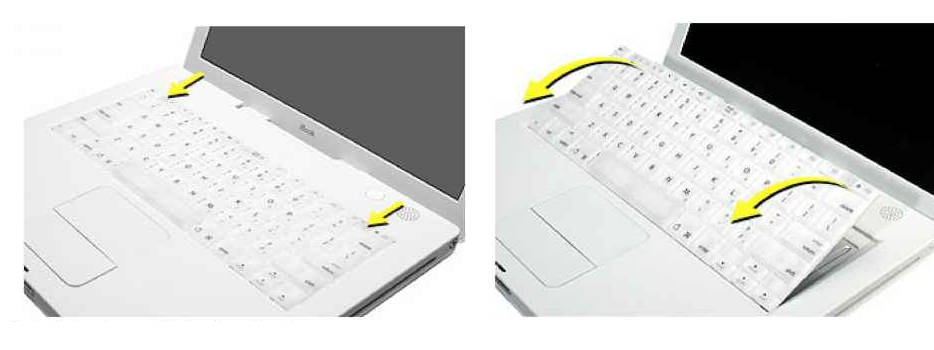
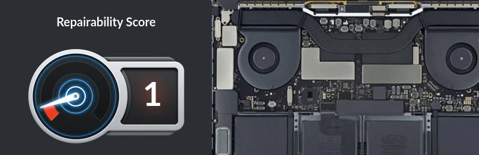
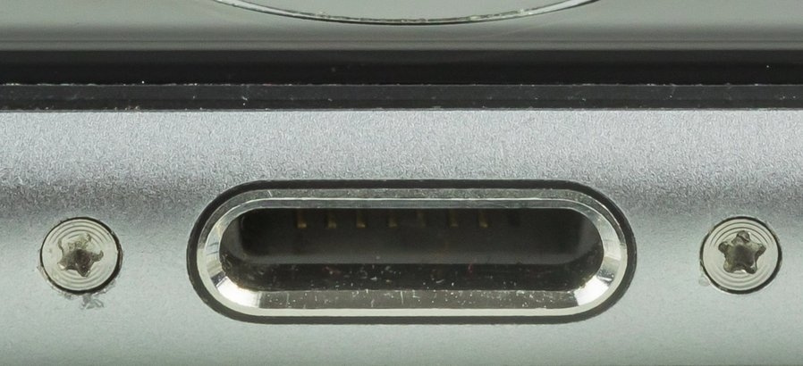
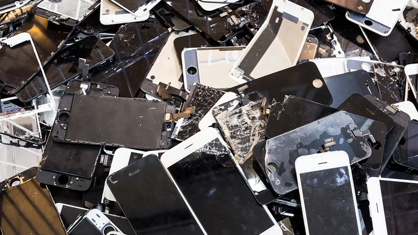
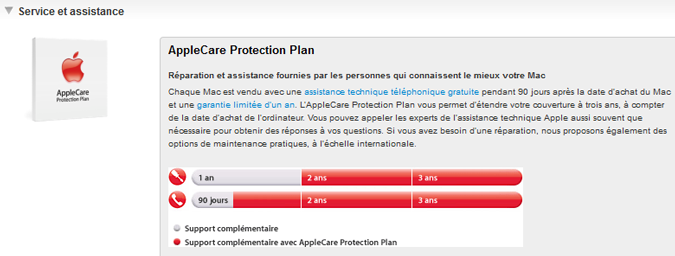
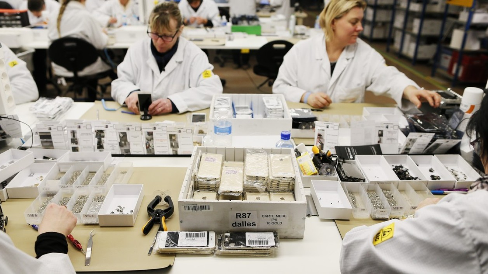
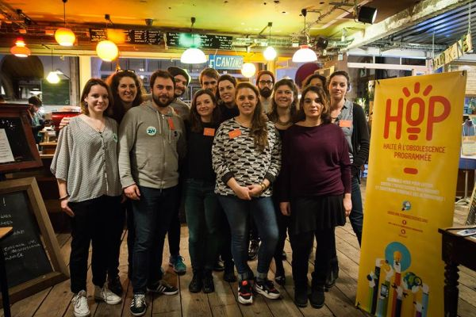
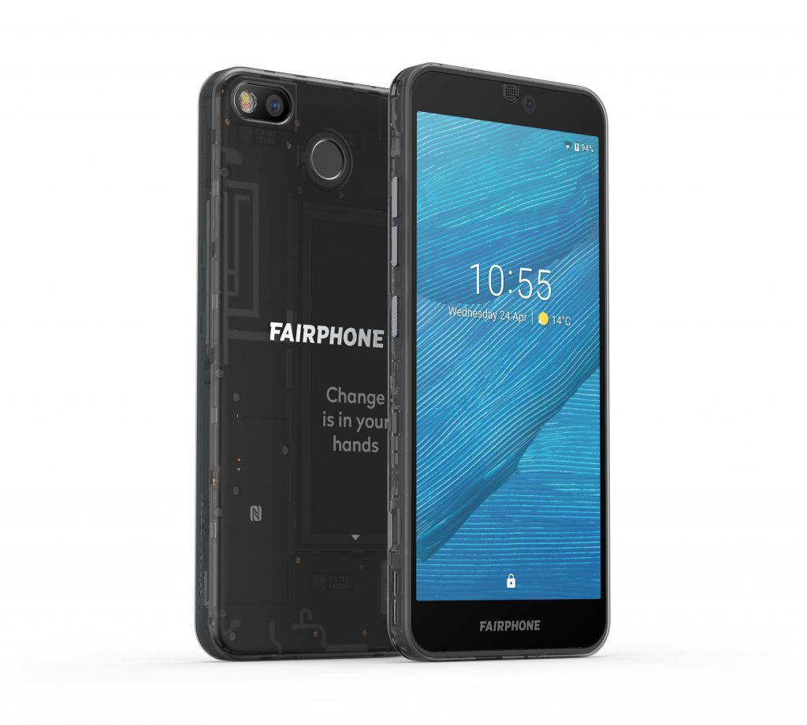

Apple et le droit à la réparation
De nos jours, la sensibilité des consommateurs à l’égard des questions écologiques et sociales pèse lourd dans la balance en faveur de la réparation et contre l’achat du nouveau. Néanmoins, Apple - une marque souvent perçue comme étant en phase avec son temps - continue de ferrailler contre les initiatives de remise en état de leurs produits.
Pourquoi réparer ?
Prolonger la durée de vie des objets présente des nombreuses avantages au niveau individuel, sociétal et écologique. Réparer s’avère moins coûteux que racheter un produit neuf, contribue à l’économie local en faisant appel à des artisans et techniciens de proximité, et permet de diminuer notre empreinte écologique. Ce dernier point concerne non seulement les déchets, mais aussi les ressources utilisées lors de la production et le transport de nouveaux produits.
Pour les appareils électroniques le bilan est lourd. Les minéraux et métaux qui les composent proviennent d’une exploitation minière souvent pointée du doigt pour leurs pratiques polluantes, conditions déplorables pour les employées et travail des enfants. Les composants sont manufacturés aux quatre coins du monde et doivent être transportés plusieurs fois jusqu’au client final, ajoutant à l’empreinte carbone de l’appareil. Finalement, les déchets électroniques - qui d’ailleurs sont les déchets avec le plus grand taux de croissance au monde - sont envoyés dans des pays en voie de développement pour être traités manuellement malgré les éléments toxiques qu’ils contiennent.
Image d’Andrew McConnell. Copyright : Panos Pictures
Plus généralement, les associations de protection du consommateur maintiennent qu’une fois l’appareil vendu, il n’appartient plus au constructeur, mais à l’acheteur. Libre à lui de faire ce qu’il veut avec. Les efforts pour empêcher les utilisateurs d’ouvrir, réparer et remplacer des pièces de leurs propres appareils entrent en conflit avec cette notion d’appartenance et créent un précédent dangereux. Le parallèle avec l’industrie automobile est souvent évoqué : ce serait impensable que Peugeot empêche l’utilisation des pièces détachées, s’oppose aux services offerts par des garagistes indépendants, ou rende impossible la personnalisation des voitures vendues.
La croisade d’Apple
Le choix de se focaliser sur Apple pour cet article est dû à l’immense portée de ses actions. En 2019, Apple devient la première boîte à atteindre le cap de 1.000.000.000.000 USD (un “trillion” pour les Américains, un billion les Français) de capitalisation boursière. C’est un montant stratosphérique : deux fois le PIB de la Suède et cinq fois le budget santé de la France. C’est plus que LLVH, L’Oréal, Sanofi, Airbus et Vinci ensemble. Apple dispose donc des moyens pour établir une forte influence partout dans le monde.
De plus, la firme de Cupertino perçoit la réparation de leurs produits comme un obstacle au profit. Tim Cook a même écrit dans une lettre aux investisseurs en 2019 que la diminution des ventes de l’iPhone est en partie dû aux clients qui remplacent la batterie. Apple a plusieurs cordes à son arc quand il s’agit de bloquer les tentatives de réparation : du design de leurs produits jusqu’aux menaces légales en passant par des verrous software, lobbying politique et surfacturation des réparations officielles, entre autres.
Des produits difficiles à réparer
Un des mécanismes pour empêcher les utilisateurs de réparer c’est de concevoir les produits de façon à rendre cette tâche de plus en plus compliqué.
Ça n’a pas toujours été comme ça. Au début des années 2000, l’iBook (ancêtre du Macbook) avait un clavier détachable à la main qui permettait d’accéder à l’emplacement de la mémoire RAM. Ce composant est important pour la vitesse de l’ordinateur et permet de faire tourner plusieurs applications en même temps. À cette époque, augmenter la mémoire pour donner un coup de neuf à un iBook prenait environ une minute et ne nécessitait pas d’outils particuliers.
 From Mac Repair Central
Des composants soudés
En 2008 Apple annonce le Macbook Air, le premier ordinateur portable de la gamme avec la mémoire soudée - et donc impossible à augmenter. Cette tendance a continué avec les lancements de produits subséquents.
Aujourd’hui, la totalité des ordinateurs portables d’Apple ont la mémoire RAM, le processeur et le disque dur soudés, rendant ainsi impossible leur mise à jour. La faille d’un composant induit souvent à l’achat d’un nouvel ordinateur, menant d’autres composants en parfait état à la poubelle. iFixit - la plateforme phare en termes de réparation et économie circulaire - leur donne un score de 1/10.

Bouton d’accueil
Avec l’arrivée des iPhone 7 et 7 Plus, on a vu apparaître les boutons d’accueil “virtuels” : une surface fixe qui donne la sensation de clic quand on appuie dessus. Apple a profité de l’occasion pour mettre en place un système de blocage en cas de tentative de remplacement. Même en installant une nouvelle pièce originale le téléphone refusera de l’adopter. Il faut noter d’ailleurs qu’il ne s’agit pas d’une contrainte physique, ce comportement a été programmée volontairement dans iOS. D’un point de vue sécurité c’est compréhensible qu’on désactive le TouchID, mais rien n’obligeait Apple à empêcher la réparation du bouton lui-même. En cas de problème les consommateurs sont obligés de passer par Apple.
La vis pentalobe
Apple a aussi décidé de rendre leurs vises incompatibles avec les tournevis standard pour empêcher les utilisateurs d’ouvrir leurs propres appareils. Apple, comme la plupart des acteurs du marché, utilisait des vises standard Phillips. Néanmoins, en 2009 la gamme commence progressivement à adopter la vis pentalobe qui ne s’accorde pas avec les tournevis existants. En 2010, les magasins Apple ont commencé à remplacer les vises standards des produits en réparation avec les nouvelles vises, ceci sans informer les clients.
De nos jours, tous les produits Apple utilisent cette vis non standard. Heureusement, en 2011 iFixit a mis au marché le “iPhone liberation kit” qui inclut un tournevis pentalobe.
 © Raimond Spekking / CC BY-SA 4.0 (via Wikimedia Commons)
Obsolescence programmée
Apple se trouve souvent au milieu des scandales liés à l’obsolescence programmée. À plusieurs reprises, des investigations ont été lancées pour déterminer si la firme de la pomme vise à réduire délibérément la durée de vie des produits pour en augmenter le taux de remplacement. Il faut noter qu’en France l’obsolescence programmée est un délit depuis 2015.
Les iPhones bridés
Un des cas les plus relayé par les médias est celui des mises à jour iOS qui ralentissent délibérément les iPhones. Apple a fini par admettre les accusations en les justifiant par un souci d’économie de batterie des anciens modèles. Néanmoins, le manque de transparence soulève des soupçons d’obsolescence programmée : les effets des mises à jour n’ont pas été communiqués et les utilisateurs se trouvaient avec des téléphones très lents sans en connaître la cause.
 © Shutterstock
Déjà en 2013, Catherine Rampbell, journaliste du New York Times, écrit un article concernant le bridage volontaire de l’iPhone 4 lors de la mise à jour iOS 7. Ses options : payer $79 pour un remplacement de batterie ou mettre $20 de plus pour un nouvel iPhone 5C. Au moment ou l’article est sorti, plusieurs personnes voyaient une théorie du complot plutôt qu’une initiative volontaire de la part d’Apple.
En 2016, des articles prouvant ce bridage intentionnel ont vu le jour grâce au travail de John Poole, fondateur de Geekbench. En même temps, le mécontentement de la part des clients commençait à se faire entendre. Apple décide alors de sortir du silence pour essayer de limiter les dégâts.
2017 démarre avec une déclaration officielle d’Apple où ils reconnaissent avoir bridé la puissance de ses anciens téléphones. La justification : il faut limiter les pics de puissance des anciennes batteries pour éviter que les iPhones s’éteignent soudainement. Si c’est donc pour la bonne cause, pourquoi l’absence de communication ? En omettant cette information les utilisateurs frustrés sont souvent poussés à l’achat d’un nouveau produit ou au remplacement hors-garantie de la batterie.
Plusieurs gouvernements ont entamé des investigations à ce sujet. En Italie, 10 millions d’amende en ont été infligés en 2018 contre Apple. En 2020, année d’écriture de ce post, la firme de la pomme a été condamnée à 25 millions d’euros d’amende en France. Cependant, ces montants restent minuscules par rapport au profit qu’Apple a pu en tirer de ces pratiques.
En France, la DGCCRF a annoncé l’amende de 25 millions d’euros le 7 février 2020
La prise casque
L’omission de la prise casque 3.5mm dans les smartphones Apple n’a pas laissé l’opinion publique indifférente. L’abandon d’une prise standard, ouverte et utilisée par des millions d’appareils depuis autour de cent ans en faveur d’une alternative propriétaire et fermée (le port Lightning) a suscité une vague de critiques. La justification employée par Phil Schiller, chef marketing Apple, est aussi étonnante qu’arrogante : “Il nous a fallu du courage pour proposer ce que nous considérons comme meilleur pour l’utilisateur”.
Even Mandela learned new things about courage today… #AppleEvent #iPhone7 #AirPods #courage pic.twitter.com/rOImiooOkB
— ♏️ℹ️ⓔⓂ️⭕️ (@miemo) September 7, 2016
Parmi les plusieurs désavantages de cette tournure, l’impact écologique saute aux yeux. L’incitation à acquérir des casques sans fil qui fonctionnent sur batterie entraîne forcément un bilan écologique plus lourd. Les mines de lithium nécessaires pour leur fabrication impactent fortement l’environnement en polluant les fleuves et en menaçant des écosystèmes qui avaient jusqu’à là échappé l’impact humain. De plus, la batterie raccourci considérablement la durée de vie des casques sans-fil par rapport aux casques câblés, contribuant davantage au problème des déchets électroniques. Toujours est-il que pour Apple, rien de mieux pour augmenter ses recettes (rappelons-nous que la firme a acquis la marque de casques audio Beats en 2013).
Manifestations contre les mines de lithium à Kangding. EJ Atlas
L’innovation ne justifie pas, en 2016, de ne pas réfléchir aux impacts de ses décisions. — Adrian Branco
Resistance à la législation
L’influence d’Apple s’exerce aussi dans l’écosystème gouvernemental, où des équipes de lobbyistes accréditées, fédérations, avocats et consultants se battent pour que les lois s’accordent aux intérêts de la firme. Ceci ne va pas toujours de la main avec les priorités sociétales : une meilleure protection des données, un système de taxation plus juste et la protection à l’environnement.
Aux États-Unis, un projet de loi nommé Fair Repair Act a vu le jour dans l’état de New York en 2015. Il exige aux fabricants de mettre à disposition du public des informations de réparation de leurs appareils ainsi que de vendre des pièces détachées pour faciliter la réparation. Apple n’a pas tardé à engager le cabinet de lobbying Roffe Group pour convaincre les législateurs de faire marche arrière. Ces efforts ont porté ses fruits : le Sénat de New York n’a pas réussi à faire passer le Fair Repair Act. Massachusetts et la Californie ont aussi échoué face au lobbying anti-réparation qui défendait sa position en affirmant que les consommateurs pourraient se blesser.
© Kyle Wiens, iFixit.com
Au Canada, le parlement d’Ontario a également présenté un projet de loi pro-réparation en février 2019. Celui-ci aurait permis la vente des pièces originales détachées aux consommateurs (par exemple, des écrans iPhone) pour encourager la remise en état des appareils électroniques. Apple, via l’Electronics Product Stewardship Canada a aussi réussi à mettre fin à cette initiative.
Au jour d’écriture de ce post, Apple ne fournit aucune pièce ou manuels de réparation en dehors de son réseau officiel.
L’Union Européenne et la garantie obligatoire
La lutte n’est pas finie même quand des lois de protection au consommateur sont promulguées. En 1999, l’Union Européenne a adopté la directive 1999/44/CE obligeant les vendeurs à offrir une garantie de réparation ou remplacement de deux ans minimum. Apple a décidé de faire croire aux consommateurs que la garantie de base dure un an pour rendre l’“AppleCare Protection Plan” plus attractif. Suite à une mise en cause en Europe, Apple a du bien clarifier que la garantie minimale est de deux ans. Le gouvernement italien a imposé 900000 euros d’amende à Apple pour ce mauvais tour.
 Site d’Apple malgré la directive Européenne étendant la garantie à deux ans.
Attaques aux indépendants
Malgré les efforts d’Apple, des réparateurs indépendants font le maximum pour faire durer ces produits. Ceci n’est pas sans conséquences : les querelles entre l’entreprise de Cupertino et les micro-entreprises prêtes à effectuer des réparations sont fréquentes. Le rapport de force n’est pas du tout le même, forçant plusieurs techniciens à mettre la clé sous la porte.
La vidéo ci-dessous présente une enquête faite par la chaîne américaine CBC news. À l’aide d’une caméra cachée, un consommateur se rend à l’Apple store pour faire réparer l’écran de son Macbook. Le coût : 1200 dollars. L’employée ne s’attarde pas à rappeler le prix d’un nouvel ordinateur, qui n’est pas loin de celui de la réparation. Le consommateur se rend ensuite au petit magasin de réparation de Louis Rossmann (non agrée par Apple). Rossmann identifie le problème : une broche courbée qui n’établissait plus de contact, facilement réglable à l’aide d’une pince. La manipulation étant trop petite pour charger quoi que ce soit, le Macbook est réparé pour zéro dollars.
La suite n’a pas été facile pour Rossmann, qui anime aussi une chaîne YouTube sur la réparation. Quelques jours après sa participation dans l’enquête CBC, la douane américaine - en liaison avec Apple - lui a confisqué un colis contenant des batteries originales MacBook. Rossmann n’est pas un inconnu des services légaux Apple, qui l’avaient déjà menacé auparavant suite aux vidéos où il explique comment réparer des produits électroniques. D’autres micro-entrepreneurs, tels que Jessa Jones et Henrik Huseby, ont aussi eu affaire à Cupertino, principalement au sujet des pièces utilisées pour les réparations.
Des réparateurs indépendants certifiés par Apple ?
Sous la pression du mouvement pour le droit à la réparation, Apple a annoncé en 2019 un programme de certification pour les réparateurs indépendants. Ceux qui participent auraient aussi l’opportunité d’acheter des pièces détachées officielles. Ce programme a néanmoins connu une opposition considérable à cause du contrat à signer par les entreprises voulant se certifier : Apple les oblige à partager toutes les informations de leurs clients avec eux, impose des audits surprises même cinq ans après une éventuelle sortie du programme, établi des amendes excessives en cas de désobéissance, et demande aux clients de signer un document déclarant que la réparation ne sera pas reconnue par Apple. Il va sans dire que ce n’est pas la joie dans la communauté des réparateurs.
Le changement est possible, mais comment ?
Diffusion
La stratégie marketing d’Apple est très sensible à l’opinion publique. Apple tente de se positionner comme une marque branchée, créative, jeune et dans l’air du temps. Relayer des articles concernant leurs pratiques anti-réparation et leurs répercussions environnementales peut aider. Ce ne serait pas la première fois : la campagne “Green my Apple” de Greenpeace a provoqué un virage vers des pratiques plus vertes à Cupertino, et la lettre ouverte de JANA concernant l’addiction aux smartphones a abouti dans l’implémentation de la fonctionnalité “Screen Time” sur iOS.
Achat du matériel reconditionné
Les alternatives existent aussi pour ceux qui ont besoin des produits Apple. Des sites comme BackMarket, Smaart, Rebuy et Recommerce permettent d’acheter des iPhones, iPads et Macs reconditionnés tout en garantissant leur qualité.
 Reconditionnement des iPhones. Photo de Charly Triballeau-AFP
Réparation de l’existant
Suite à la réticence des services officiels de réparation Apple et aux contraintes auxquelles les boutiques agrées sont soumises, il est toujours utile de regarder du côté des réparateurs indépendants non-agrées. Des magasins comme MacBoutic à Lyon, MacInfo à Paris ou Atelier Express à Marseille offrent des services à un prix raisonnable qui permettent d’allonger la durée de vie de votre appareil.
Soutien aux associations
L’association HOP (Halte à l’obsolescence programmée) mène plusieurs actions en faveur des consommateurs et contre des pratiques anti-réparation. En 2017 ils ont porté plainte contre Apple suite aux révélations des techniques visant à ralentir les iPhones. L’association a plaidé pour la réversibilité des mises à jour ainsi que l’amovibilité des batteries lors d’une audition par le Sénat en 2017. Pour faire un don c’est par ici.
 HOP - Halte à l’obsolescence programmée.
Quitter Apple
Il existe aussi des alternatives aux iPhones qui affichent une bien meilleure réparabilité. Fairphone est une entreprise sociale basée aux Pays-Bas qui fabrique des smartphones éthiques et modulaires basés sur Android. Le Faiphone est le seul téléphone à avoir obtenu l’indice maximal de réparabilité : 10/10 sur la plateforme iFixIt. Les matériaux utilisés sont recyclés et équitables (l’or est même certifié FairTrade).

Côté ordinateurs, abandonner OS X pour un système d’exploitation performant, respectueux de la vie privée et réparable est aussi possible. Linux a longtemps désintéressé les moins technophiles à cause de sa technicité perçue comme trop élevée. Néanmoins, dans les dernieres années plusieurs distributions (par ex, Elementary OS, Ubuntu ou Fedora) ont fait des avancées en matière d’ergonomie et design et se positionnent aujourd’hui comme des alternatives aux systèmes commerciales. De plus, OS X et Windows ont subi plusieurs critiques suite au traitement des données personnelles et au faible support d’ancien matériel, ce qui pousse de plus en plus de consommateurs vers des distributions Linux.
Elementary OS, une distribution Linux.
Think Different
En 1997 Apple a présenté sa campagne publicitaire “Think Different”, Pensez Différent en français - faute grammaticale assumée. Le slogan a été utilisé dans un spot publicitaire ou Steve Jobs récite “Here’s to the crazy ones” de Bob Siltanen avec des images des personnalités célèbres tels qu’Albert Einstein, John Lennon et Martin Luther King. Apple se voulait être un des rebelles et désadaptés qui changent le monde.
En 2020, face à la crise climatique et l’irresponsabilité d’Apple, il est temps - plus que jamais - de penser différemment.